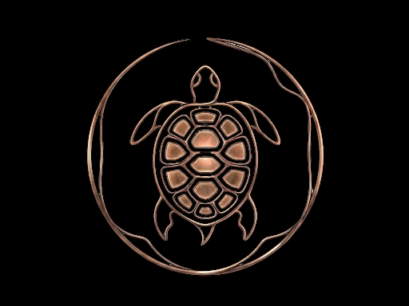

IL LIBRO SACRO DI OLTRETEMPO
Registro Digitale - Sintonizzazione Eterica & Autarchia

Archivio Eterico
Chronache del Vril
Sperimentazioni pratiche sull'accumulo di energia libera e schermatura dal connettoma.
Registro Storico
La Biblioteca del Silenzio
Curata da Sophia. Testi proibiti, fonti primarie e il revisionismo di Lorenzo (L'Ombra di Thule).
Pubblicazione
#ENTANGLED Magazine
Tutti i numeri dal №1 al №62. L'architettura del soccorso e la liberazione verticale.
Frequenza Madre
Lo Zero dei Tarocchi
Incroci archetipici, analisi del Vril e le chiavi per la sovranità personale.